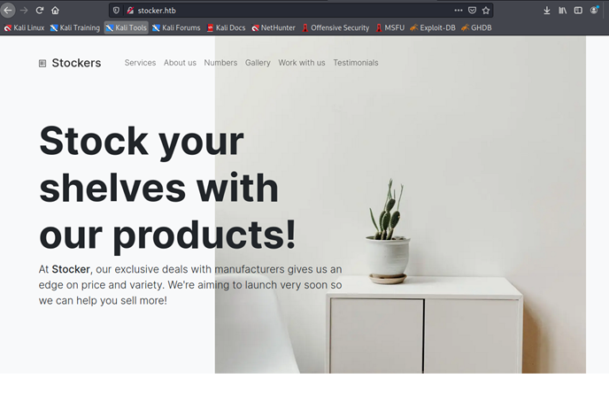
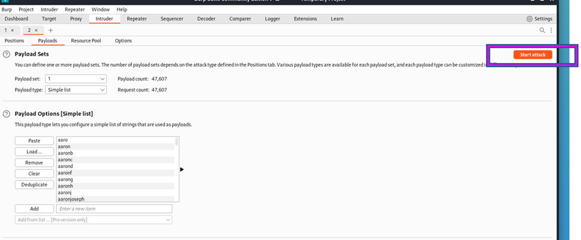
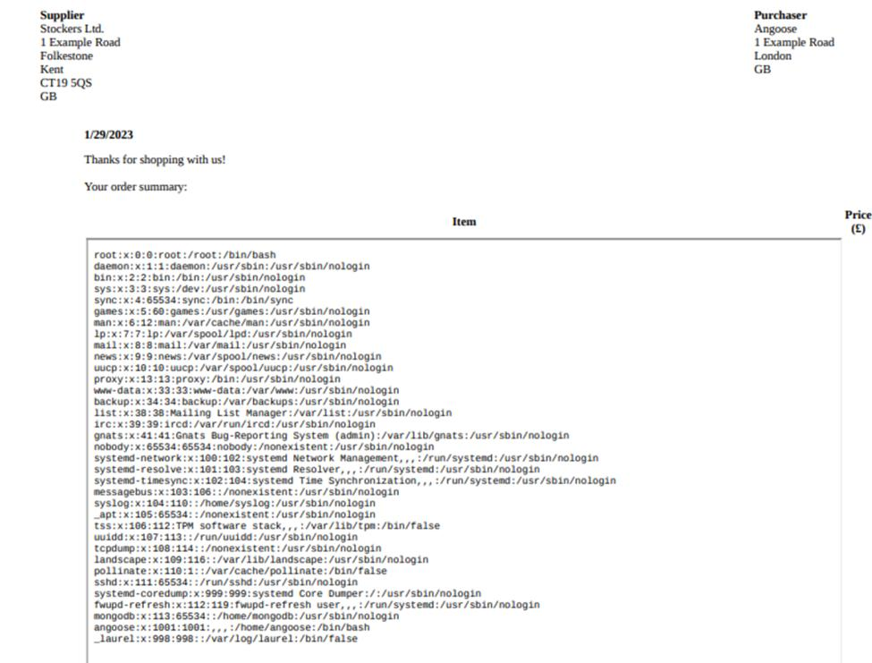

January 29, 2023
Stocker
Tools Needed: Nmap, Gobuster, Burp Suite and NoSQL.
Step 1: Start off with an Nmap Scan
nmap -sV -sC <IP ADDRESS> -oA <FILE NAME>
In the Nmap scan we found that port 80 is open. This means that there is a website. When going to http://stocker.htb we are shown this website as the home page. We can start clicking around for anything interesting while we set up more scans to further enumerate the host.
When a CTF challenge has a website, I immediately think “gobuster and burp suite.”
Gobuster is a great tool to enumerate a website. It allows us to scan for potential directories, such as www.<WEBSITE>.com/dev as well as vhosts on the host such as dev.<WEBSITE>.com
This will scan for any directories that come after the main website:
gobuster dir -u http://stocker.htb/ -w /usr/share/wordlists/dirbuster/directory-list-2.3-medium.txt
This will scan for any vhosts:
gobuster vhost -u http://stocker.htb/ -w /usr/share/seclists/Discovery/DNS/subdomains-top1million-5000.txt –append-domain
The gobuster scan returned a single result of dev.stocker.htb. Do not forget to add that to the /etc/hosts file and then go visit the site. You will be prompted with a login page.
First thing to do when you see any login prompt is to try default credentials. Admin/admin is a very simple test. You can also look for any information such as what the website was made on and then you can Google that service’s default credentials and try those out.
Even if they do not work, you may get some useful error messages such as “Wrong password for this user” or “This user does not exist.” This may give out some hints on what to do next.
In this case, very little information was given out. I did not see a version or any technologies that this site may be running off.
So, we can open up Burp Suite and go to the website to capture the request.
With so little information, I decided to try something simple and go for a password spray at the login. I sent the login request to Intruder to load up a wordlist to help with the process.
.png)
Add a payload (your wordlist) and click start attack.
This ended up giving us nothing, so time to try something else.
Trying to figure out what to do next, I went to https://github.com/swisskyrepo/PayloadsAllTheThings to see if there was anything interesting that I could use on this login.
I tried looking at a few of the "INJECTION" links and tried them all to see if anything would work.
After some failed attempts, we got to the NoSQL injection bypass.
For this to work, we have to change the “Content-Type” of our request to JSON, which was previously URL-encoded.
Here is the working authentication bypass:
Notice the changed type on line 7, as well as the actual exploit on lines 17+.
Send to repeater, replace the content-type with application/json.
Replace the username/password with the following:
{
"username": {"$ne": null},
"password": {"$ne": null}
}
Send again. There is no error. Click show response in browser and a link will pop up for you to copy. Paste it in the browser and you are authenticated. Now we can start looking around the website.
Most of the links are useless and go nowhere, but there is an order form that we can create (View Cart). We can capture the request through Burp Suite again to look at it.
There’s some action going on with the server side which produces a PDF. The content we send to it through Burp Suite gets passed no problem, so we can start adding in XSS. Doing some testing, we can start reading some files that are hosted on the computer with iframes.
We can use this to read files like /etc/password to get some information.
Looks like we found a user angoose, this may be helpful to use later, but this is not giving us anything immediately to get access.
Not much we can find, but if we read index.js from the current directory, we get some extremely useful information.
A password is shown, and we can now try to use those credentials, and we remember from our nmap scan that port 22 (SSH) is open, we can try those to get us in.
Use our found credentials and we are in.
Type ls to see what we have and there is user.txt! Cat it and we have the user flag.
Now let’s run sudo -l to see what we can run as root. This should be our go to when trying to get from user to root.
We can use node, but only if it is a *.js from the usr/local/scripts/ directory.
This is a huge error to make, as anything following the * and ending in js will be a valid path. This means we should be able to execute commands as sudo if we are able to create a .js file in ANY directory. As I am rather unfamiliar with node.js, I needed to search a way to execute a command with it.
https://stackabuse.com/executing-shell-commands-with-node-js/
We can create files in “/home/angoose” so we can create the following file to grab our root flag (or execute any other command we would want)
Run the command:
sudo /usr/bin/mode /usr/local/scripts/../../../home/angoose/file.js
The script will execute and root.txt will be read!
Success! Stocker has been pwned üòé